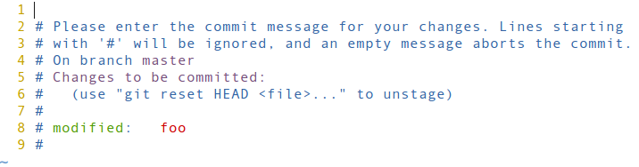
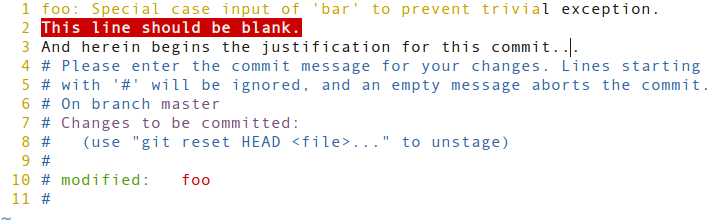
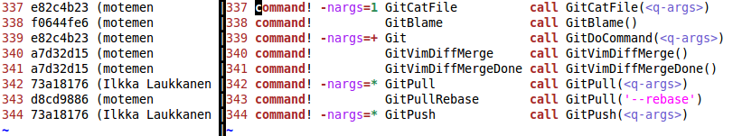
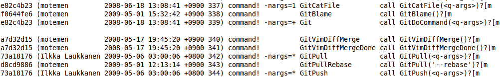

Vim Recipes ‣ Extending ‣ Integrating Vim with Git
You use the Git version control system with Vim and want shortcuts for common operations and syntax highlighting for git output.
Thanks to the work of Tim Pope and others, Vim ships with syntax highlighting support for Git output/templates. For example, after executing git commit -a, with Vim set as your default editor, you'll see 
Vim can even help you write better commit messages. Git commit messages should typically have a 50-character or less summary as their first line, with a blank second line, then, optionally a long explanation, wrapped at about 72 charactersFor an explanation of this convention see A Note About Git Commit Messages.. There's no need to remember this convention, however, because Vim warns you, visually, if you colour outside the lines. For example:
In this example, the first line is too long, so the extraneous characters are coloured black. The second line should be blank, so it has a red background to indicate its contents are in error.
motemen's git-vim plugin extends this support by adding shortcuts and commands for common Git operations.
Install it by copying its files to your Vim directory. For example, on Linux:
mkdir -p ~/.vim
cd /tmp
git clone git://github.com/motemen/git-vim.git
cp -r git-vim/{plugin,syntax} ~/.vim/
cd -You now have access to commands such as :GitCommit, which will, split your window horizontally, loading the Git commit template into the upper pane. Once you have written your commit message and quit the buffer, your file will be committed. (This assumes, of course, that the current file is located in a Git working directory).
Bob Hiestand's vcscommand plugin offers similar functionality to git-vim, but it also supports CVS, SVN, and SVK. This makes it especially suitable for situations where one uses multiple version control systems.
Through a combination of editable history and particularly fast operation, Git invites regular commits. This is only feasible, however, if Git is tightly integrated into Vim, because otherwise version control will become a source of distraction that steals your focus and wastes your time.
Vim's ability to execute external commands already makes using git reasonably straightforward. For instance, :!git add % would add the current file, while :!git log would temporarily suspend Vim to show you the commit log.
The git-vim plugin expedites this process by providing Normal mode shortcuts. \gaThis example and those following assume that your Leader variable is set to the default of /; see :help leader for details. adds the current file, \gc commits it, etc.For a complete list of shortcuts offered by this plugin see its README.rdoc file.
git-vim takes this integration further for commands like :GitBlame where the window is split vertically to show the author's name alongside the lines he was responsible for.
This presentation is clearly superior to the output of :!git blame %, shown below, in that it employs syntax highlighting, allows inline editing, and hides extraneous output.
